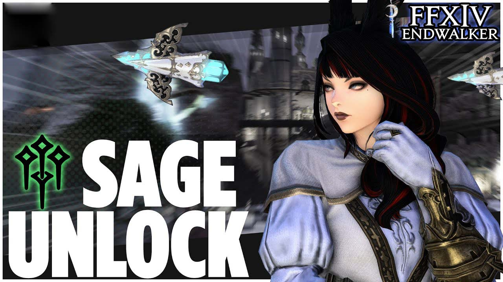

(
(
How to Unlock Sage in Final Fantasy XIV: Endwalker?
Final Fantasy XIV: Endwalker adds a new healer class, Sage, but players need to complete some quests to get it for their character. Here's everything you need to know about how to find and complete the starting quest to unlock Sage in FFXIV: Endwalker.

Final Fantasy XIV: Endwalker - Sage Class
The Sage class is a new healing class for Final Fantasy XIV. The job focuses on healing and using barriers to enhance their allies' defenses while using nouliths to channel aether to attack their foes. They have no base class and start at level 70.
Requirements to Unlock the Sage Class
To unlock the Sage job, you'll need to have the following:
• Own the Endwalker expansion.
• Have a Level 70 disciple of war or magic.
How to Unlock Sage in Final Fantasy XIV: Endwalker?
When you meet two criteria, you can go to unlock the Sage, proceed as follows:
1). To unlock Sage, you must complete the "Sage's Path quest."
2). It can be found in the Limsa Lominsa Lower Decks (9.4,12.9).
3). You can quickly reach this location by taking the Limsa Lominsa Lower Decks Aetheryte crystal. Make sure you don't accidentally head to the Limsa Lominsa Upper Decks.
4). When you arrive at the coordinates, speak with Sharlayan Maiden, and you'll receive the quest for Sage's Path.
5). Her name is Lalah Jinjahl, and she wants the player to be her guide and bodyguard.
6). After chatting with this Final Fantasy 14 NPC, players will have to head east to meet her outside the Zephyr Gate to continue the quest.
7). She is tracking down fugitives from her homeland who committed murder, and players will have to help her track down all three.
8). After the cutscene plays where players are presented with a Sage Job stone, a prompt will pop up on the screen; say "Yes" to swearing to be a Sage.
9). After this, the Sage Job will be unlocked, and players can start using this new class at level 70 with a level cap of 90.
All Quests to Unlock the Sage Class
While the first quest, "Sage's Path," maybe unlocked at level 70, the remaining quests will require a higher level each time until reaching 80 for the last. Here are the quests needed to unlock the Sage Class in FFXIV:
| Quest | |
| Sage's Path | This initial quest will begin the series and reward the icons needed to continue, like the Stonegold Milpreves icon. |
| Sage's Focus | This part of the quest requires players to practice giving aid, then battle with Ancel Rockfist, Loida Brighteye, and Mahaud Flamehand. |
| Sands of Despair | This part of the quest will include a few conversations, cutscenes, still rewarding experience, and Final Fantasy 14 Gil. |
| Poisoned Gift | Players will attempt using diagnosis in this quest. |
| Pledge of Hope | Players will again use the diagnosis, then fight some fiends. |
| Life Ephemeral, Path Eternal | Finally, players will travel to Hundred Throes and take on the boss, Guildivain. |
That's how to unlock the Sage in FFXIV Endwalker. It is that simple! Want to be the best player in the game? Stay tuned to the news page at BUYFFXIV4GIL.COM for plenty of game guides and tips.